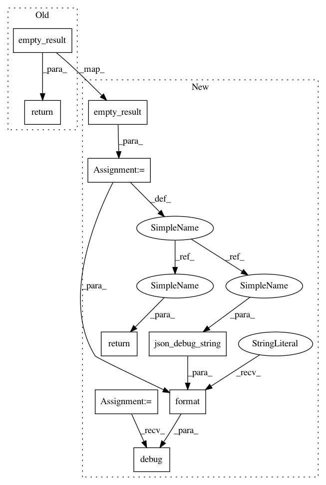

cfed78eb5817ba8e688f363df75e9160a103f134,snips_nlu/intent_parser/deterministic_intent_parser.py,DeterministicIntentParser,parse,#DeterministicIntentParser#Any#Any#,92
Before Change
parsed_slots = sorted(parsed_slots,
key=lambda s: s[RES_MATCH_RANGE][START])
return parsing_result(text, parsed_intent, parsed_slots)
return empty_result(text)
def _is_trainable(self, intent, dataset):
if len(intent[UTTERANCES]) >= self.config.max_queries:
return False
After Change
break
if found_result:
break
result = result or empty_result(text)
logger.debug("DeterministicIntentParser parsed in {}".format(
elapsed_since(start)))
logger.debug("Result -> {}".format(json_debug_string(result)))
return result
def _is_trainable(self, intent, dataset):
if len(intent[UTTERANCES]) >= self.config.max_queries:
return False
In pattern: SUPERPATTERN
Frequency: 3
Non-data size: 9
Instances
Project Name: snipsco/snips-nlu
Commit Name: cfed78eb5817ba8e688f363df75e9160a103f134
Time: 2018-04-25
Author: clement.doumouro@gmail.com
File Name: snips_nlu/intent_parser/deterministic_intent_parser.py
Class Name: DeterministicIntentParser
Method Name: parse
Project Name: snipsco/snips-nlu
Commit Name: cfed78eb5817ba8e688f363df75e9160a103f134
Time: 2018-04-25
Author: clement.doumouro@gmail.com
File Name: snips_nlu/intent_parser/probabilistic_intent_parser.py
Class Name: ProbabilisticIntentParser
Method Name: parse
Project Name: snipsco/snips-nlu
Commit Name: cfed78eb5817ba8e688f363df75e9160a103f134
Time: 2018-04-25
Author: clement.doumouro@gmail.com
File Name: snips_nlu/nlu_engine/nlu_engine.py
Class Name: SnipsNLUEngine
Method Name: parse